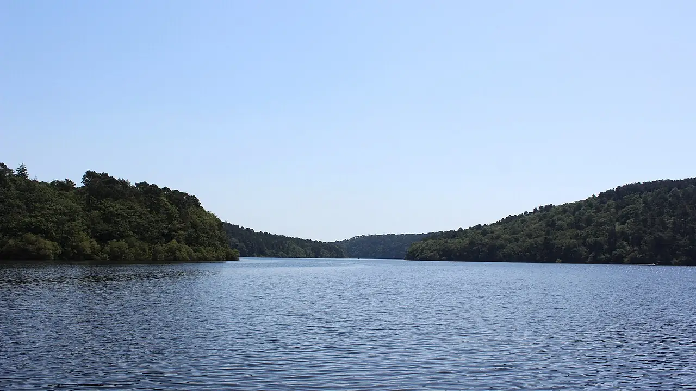

Lac de Guerlédan
Côtes-d’Armor, France · kayak, paddle, baignade

Le plus grand lac artificiel de Bretagne, né d’un barrage sur le Blavet, niché entre des pentes boisées. Un plan d’eau abrité pour le kayak, le paddle et la baignade en été.
- Lieu
- Côtes-d’Armor, France
- Niveau
- Débutant
- Activités
- kayak, paddle, baignade
- Type d'eau
- lake
- Coordonnées
- 48.21, -3.05 (position approximative du secteur)
Dangers à connaître
- Eau fraîche et vite profonde.
- Plan d’eau partagé avec des bateaux à moteur.
Le conseil d'Ocean Buddy
La base nautique de Beau-Rivage loue kayaks et paddles ; baigne-toi dans les zones surveillées.
Ouvrir dans Ocean Buddy Télécharger sur l'App Store
Source : Fiche Ocean Buddy · septembre 2026 · à vérifier localement.